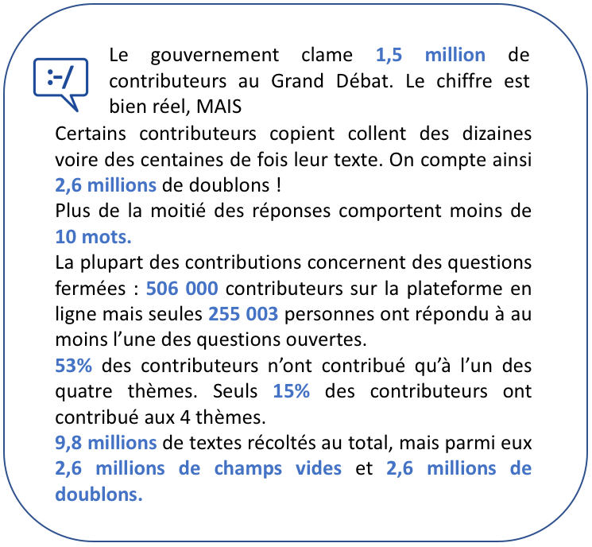
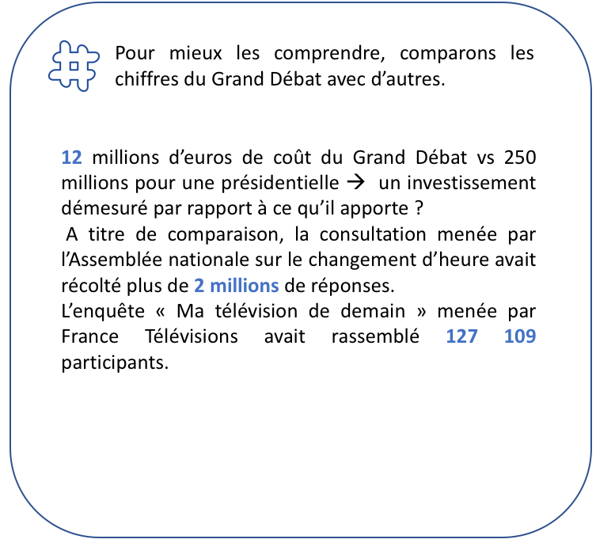

Face aux violences des gilets jaunes qui ne cessaient pas, le président Emmanuel Macron a décidé de proposer aux citoyens de s’exprimer dans le cadre d'un "Grand Débat National". Chaque citoyen a donc été invité à exprimer ses attentes, dans l’idée qu’un dialogue national s’engage entre tous et que tous puissent y contribuer. Mais ce Grand Débat pose plusieurs problèmes. La mise en place, les questions posées qui semblaient orientées, ou la difficulté de lecture des résultats, par exemple.
C'est pour cette raison que notre équipe de statisticiens a voulu apporter des outils de lecture pour que tout le monde puisse comprendre les débouchés du Grand Débat. Cela nous a paru indispensable pour que chacun puisse plonger dans la masse de données qui a été produite par les cahiers de doléance. Et vous verrez en conclusion de notre étude que le résultat est plus que mitigé...
Commençons notre voyage par poser quatre questions sur le Grand Débat.
Un débat pour qui ?
» Tous les citoyens.
Un débat quand ?
» De janvier à avril 2019.
Un débat où ?
» Partout en France
Un débat comment ?
» Via des plateformes numériques ou des conférences.
Pour participer au Grand Débat, les citoyens étaient invités à s'exprimer sur des sujets choisis. Ceux-ci étaient au nombre de quatre, et il était possible d'en ajouter (ce qui n'a pas été trop utilisé). Chaque sujet comprenait des questions déjà rédigées, afin de donner un paradigme aux expressions des citoyens. Vous pourrez retrouver dans l'encadré ci-dessous les grandes questions amenées par chacun des sujets.
Comment rendre les solutions concrètes accessibles à tous ?
Quelles propositions concrètes faire pour accélérer notre transition environnementale ?
Fiscalité et dépenses publiques
Comment rendre la fiscalité plus juste et efficace ?
Quels impôts baisser en priorité ?
S'il faut selon vous revoir les conditions d'attribution de certaines aides sociales, lesquelles ?
Comment rendre la fiscalité plus juste et efficace ?
Quels impôts faut-il baisser en priorité ?
Quelles propositions concrètes pour accélérer la transition environnementale ?
La démocratie et la citoyenneté
Faut-il reconnaître le vote blanc ?
Faut-il, et dans quelles proportions, limiter le nombre de parlementaires ou autres catégories d’élus ?
Quel rôle ont nos assemblées ?
État et services publics
Rendre les administrations et les services publics plus efficaces, plus accessibles et plus transparents
Y a-t-il trop d’échelons administratifs ?
Les grands débats, une spécificité française
Comme nous l'avons dit dans la section précédente, le Grand Débat a donc fait suite aux manifestations des Gilets Jaunes. La très forte mobilisation a pris de court le gouvernement, qui a mis du temps à réagir. Mais ces manifestations, suivis de débats houleux, sont-elles les premières dans l'Histoire de la France ? Nous retraçons pour vous les grands événements qui ont fait de la société française ce qu'elle est aujourd'hui.
Le Grand Débat en chiffres
Un coût total du Grand Débat estimé à 12 millions d'euros
10 000 réunions locales et conférences
500 000 participants sur la plateforme en ligne
500 000 contributions par le biais des cahiers de doléances ouverts par les communes et des courriers (papiers et électroniques)
500 000 participants aux réunions locales
Participation par département au débat sur la transition écologique
Qui sont ceux qui ont le plus contribué au débat ? Peu de données ont été recueillies sur les répondants, mais ceux-ci avaient la possibilité de communiquer leur code postal. Voici la répartition du nombre de questionnaires remplis par département et par thème, en nombre absolu.
Quels sont les thèmes et les questions qui ont suscité le plus d'attention de la part de nos concitoyens ? Beaucoup de critiques ou de commentaires creux mais peu de suggestions substantielles ? Nous vous présentons, pour chaque thème, les 5 questions auxquelles on a le plus et le moins répondu.
On peut souvent remarquer que ce sont les réponses au tout début du questionnaire qui sont les plus complétées. On peut aussi voir que beaucoup d'avis généraux sont donnés mais que peu de propositions concrètes sont faites, même pour les questions les plus populaires. On pourra ainsi voir les taux de complétion très faibles des "Si oui, comment ?" après les questions très considérées comme "Faut-il donner un rôle plus important aux associations et aux organisations syndicales et professionnelles ?". On notera également le faible taux de réponses aux questions ouvertes à la fin de chaque questionnaire, ces questions ouvertes ayant en général moins de réponses.
Nombre total de réponses : 153809
Nombre de questions posées : 16
Pourcentage de questionnaires remplis en entier : 12.0 %
Pourcentage de questionnaires remplis en entier ou avec une seule réponse manquante : 30.2 %
Pourcentage de questionnaires ayant une réponse manquante ou plus : 88.0 %
Pourcentage de répondants n'ayant répondu qu'à la première question : 0.3 %
Pourcentage de répondants ayant répondu au moins à la première question : 93.2 %
Fiscalité et dépenses publiques
Nombre total de réponses : 186711
Nombre de questions posées : 8
Pourcentage de questionnaires remplis en entier : 40.0 %
Pourcentage de questionnaires remplis en entier ou avec une seule réponse manquante : 58.5 %
Pourcentage de questionnaires ayant une réponse manquante ou plus : 60.0 %
Pourcentage de répondants n'ayant répondu qu'à la première question : 1.2 %
Pourcentage de répondants ayant répondu au moins à la première question : 69.1 %
La démocratie et la citoyenneté
Nombre total de réponses : 116549
Nombre de questions posées : 37
Pourcentage de questionnaires remplis en entier : 5.0 %
Pourcentage de questionnaires remplis en entier ou avec une seule réponse manquante : 11.9 %
Pourcentage de répondants n'ayant répondu qu'à la première question : 0.9 %
Pourcentage de répondants ayant répondu au moins à la première question : 76.6 %
État et services publics
Nombre total de réponses : 111953
Nombre de questions posées : 33
Pourcentage de questionnaires remplis en entier : 0.0 %
Pourcentage de questionnaires remplis en entier ou avec une seule réponse manquante : 0.8 %
Pourcentage de questionnaires ayant une réponse manquante ou plus : 100.0 %
Pourcentage de répondants n'ayant répondu qu'à la première question : 3.5 %
Pourcentage de répondants ayant répondu au moins à la première question : 75.4 %
Les sujets récurrents du débat
En analysant les réponses des citoyens, nous avons remarqué que certaines idées étaient abordées de manière récurrente. Quels sujets tiennent le plus à coeur pour chaque thème du débat ?
La transition écologique
En termes de transition écologique, les thèmes les plus récurrents sont les transports : moins utiliser la voiture, davantage utiliser les transports en commun, telles sont les revendications des citoyens. On voit également une récurrence des sujets de pollution de l’air, de changement de climat et de disparition des espèces.
La fiscalité et les dépenses publiques
En ce qui concerne les dépenses publiques, les modalités d’attribution reviennent souvent dans les réponses. La plupart des citoyens demandent à ce qu’elles soient revues. Un autre thème récurrent est celui des aides sociales, et les différentes taxes sont également mentionnées régulièrement.
La démocratie et la citoyenneté
La thématique du vote est abordée de manière répétitive au sujet de la démocratie et de la citoyenneté, en particulier en termes de revendication du vote blanc ou d'un vote obligatoire.
L'organisation de l'Etat et des services publics
Les sujets relatifs à la sécurité routière, notamment en termes de limitations de vitesse, sont souvent abordés. Pôle emploi est très souvent mentionné également, ainsi que les dysfonctionnements au sein de l'administration et de la fonction publique.
Les limites du Grand Débat


Source : Le Monde, 8 avril 2019
Une participation qui décroît au fil du temps
Le pic de participation du 10 mars est lié aux annonces de Sébastien Lecornu, ministre chargé des collectivités territoriales et coanimateur du débat, publiées ce même jour dans Le Journal du dimanche. Il y dévoile certains premiers résultats, indique la clôture du débat en avril et annonce que les propositions du gouvernement seront dévoilées au fur et à mesure, et ce « jusqu’à l’été ». Le 15 mars correspond à date officielle de clôture du Grand débat national.
On continue le débat !
Contact
Une question, une remarque, une suggestion ? C'est par ici !


 500 000 participants aux réunions locales
500 000 participants aux réunions locales